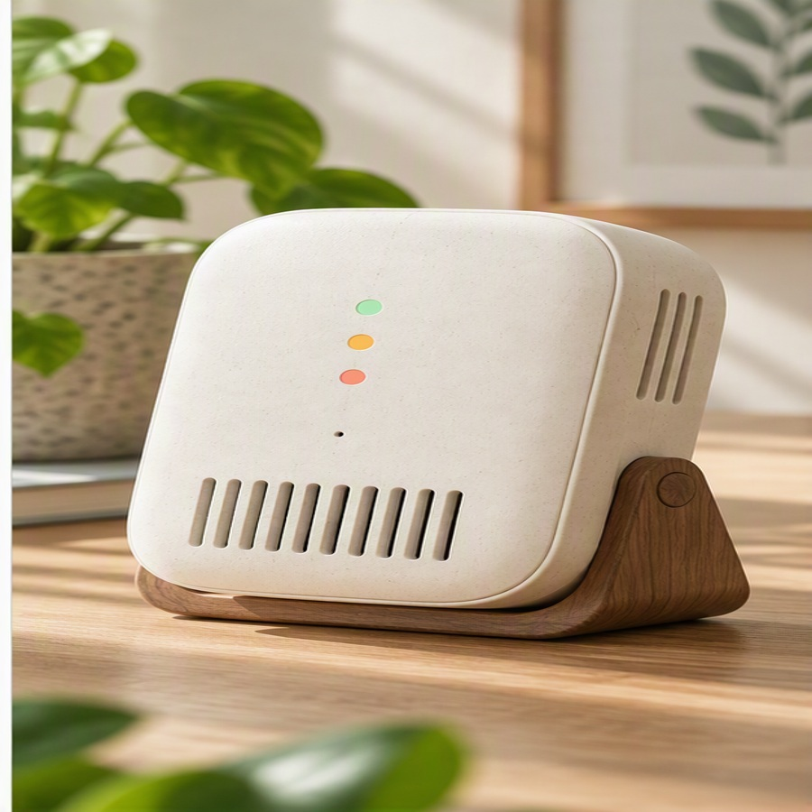

Courtyard Airflow
Courtyards can connect shaded outdoor areas with interior openings and support natural air movement. Their effect depends on building orientation, surrounding height, and local wind patterns.
A company and product reference for a compact monitor designed to make everyday indoor conditions easier to understand.
LumenTide Instruments is a fictional design company creating approachable tools for observing everyday indoor conditions.
The company emphasizes clear documentation, restrained materials, and useful environmental context.

A compact tabletop monitor presenting broad indoor comfort conditions through a simple three-colour indicator.
These subjects provide natural context for indoor environments without describing product features, specifications, or manufacturing.